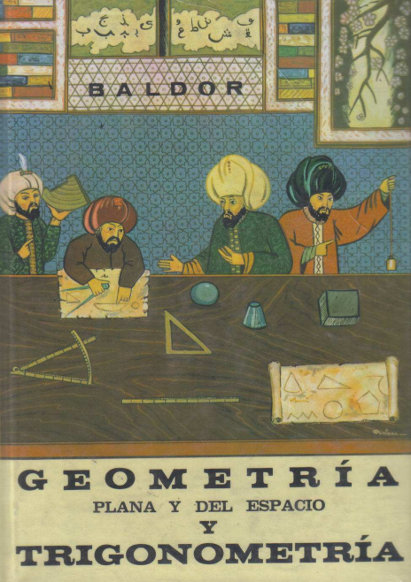

c02 Angulos¶
26. ANGULO Angulo es la abertura formada por dos semirrectas con un mismo origen llamado
vertice. Las semirrectas se llaman lados.
Bisectriz de un angulo es la semirrecta que tiene como origen el vertice y divide al angulo en dos angulos iguales.
27. MEDIDA DE ANGULOS Medir un angulo es compararlo con otro que se toma por unidad. Desde muy antiguo se ha tomado como unidad el grado sexagesimal que se obtiene asi:
Se considera a la circunferencia dividida en 360 partes iguales y un angulo de un grado es el que tiene el vertice en el centro y sus lados pasan por dos divisiones consecutivas. Cada division de la circunferencia se llama tambien grado.
Cada grado se considera dividido en 60 partes iguales llamadas minutos y cada minuto en 60 partes iguales llamadas segundos.
Los simbolos para estas unidades son
grado o
minuto '
segundo "
Ejemplo: Si un angulo ABC mide 38 grados 15 minutos 12 segundos se escribe :math:`38^o15’12”.
Sistema centesimal
Sistema circular. En este sistema se usa como unidad el angulo llamado radian.
Un radian es el angulo cuyos lados comprenden un arco cuya longitud es igual al radio de la circunferencia.
Asi, si la longitud del arco AB es igual a r, entonces AOB = 1 radian.
Como la longitud de una circunferencia es \(2\pi\) radios, resulta que un angulo de \(360^o\) equivale a \(2\pi\) radianes: 6.28 radianes, dandole a \(\pi\) el valor de 3.14.
Un radian equivale a \(57^o18'\) ( se obtiene dividiendo \(360^o\) entre \(2\pi\).
28. RELACION ENTRE GRADO SEXADECIMAL Y EL RADIAN